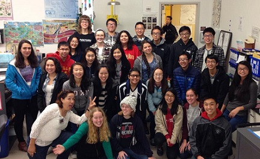

Science Clubs

BIOLOGEES
 The Biologees Club takes biology out of the classroom and puts it in a “field-trip-like” perspective. We hold dissections, clean ups, and visits to local museums and other relevant places. Oh, and we take s to local museums and other relevant places. Oh, and we take #cellfies. Meet Fridays at lunch in room 243
The Biologees Club takes biology out of the classroom and puts it in a “field-trip-like” perspective. We hold dissections, clean ups, and visits to local museums and other relevant places. Oh, and we take s to local museums and other relevant places. Oh, and we take #cellfies. Meet Fridays at lunch in room 243
Presidents --- Kyltie Xu and Edwin Chau
MATHEMATICA CLUB
Wolfram Mathematica is a high-level programming language widely used in various fields of STEM that enables users to compute complicated calculations, visualize graphs quickly and efficiently, and analyze data. At Mills Mathematica Club, you will get an introduction to the basic syntax and many important functions needed for computing and visualization. To help you master the basics, you will be assigned projects to guide your learning by doing. Once you have a better understanding of applying the skills you practice, you will be able to pursue projects of your own and even submit them on the Mathematica Demonstrations Page. Mathematica meetings cultivate an environment conducive to learning the Wolfram language. Meet Tuesdays at lunch in room 223.
President --- Michael Chang
ROBOTICS TEAM
 The Mills Robotics Team 253 was established in 1999. It has been competing for fifteen years, earning numerous awards such as the 2000 Judge’s Award at the NASA Ames Regional and the 2002 Imagery Award at the Silicon Valley Regional. Every year, we attend a regional competition in the spring and an off-season competition in the fall. This teaching fosters a cooperative learning environment that encourages and helps students acquire a wide variety of technical skill useful for STEM careers. Meet Wednesdays 3:30-5:30 in room 262.
The Mills Robotics Team 253 was established in 1999. It has been competing for fifteen years, earning numerous awards such as the 2000 Judge’s Award at the NASA Ames Regional and the 2002 Imagery Award at the Silicon Valley Regional. Every year, we attend a regional competition in the spring and an off-season competition in the fall. This teaching fosters a cooperative learning environment that encourages and helps students acquire a wide variety of technical skill useful for STEM careers. Meet Wednesdays 3:30-5:30 in room 262.
President --- Dylan Lamont
S.T.E.M CLUB
The Mills S.T.E.M. Club is a club dedicated to increasing students' awareness, knowledge, and interest in science, technology, engineering, and math. We do cool experiments (marshmallow towers!) and take field trips to places such as Genentech, Autodesk, and the Maker Faire. We also do community outreach projects to schools to teach kids a little about S.T.E.M. Come by room 218, Tuesdays at lunch to check it out!
Presidents --- Kaitlyn Chan and Cara Ip